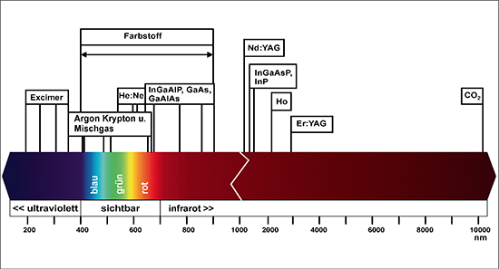

(1) Je nach verwendetem aktiven Medium gibt es verschiedene Lasertypen: Gas-, Festkörper-, Flüssigkeits- bzw. Farbstofflaser. In den Tabellen A2.1 und A2.2 sowie in Abbildung A2.1 sind die Laserarten mit ihren typischen Kennwerten und Anwendungsgebieten dargestellt.
Tab. A2.1 Gaslaser (Beispiele)
| Lasermedium | Wellenlänge in µm | Dauerstrichbetrieb Typische Ausgangsleistung in W |
Impulsbetrieb Typische Ausgangsenergie in J |
Anwendungsbeispiele | |||
| Stickstoff (N2) | 0,3371 | 0,12 · 10-3 – 1 · 10-3 | optisches Pumpen von Farbstofflasern | ||||
|
0,1931 0,2484 0,308 0,351 |
0,1 – 1 | Materialbearbeitung, Spektroskopie, Medizin, optisches Pumpen von Farbstofflasern | ||||
| Helium-Neon (He:Ne) |
dominante Linie: 0,6328 weitere Linie: 0,543 |
0,5 • 10-3 – 50 • 10-3 | Messtechnik, Justieren, Holografie | ||||
| Argon (Ar+) | Linien von 0,3511 bis 0,5287 |
0,5 – 25 | Holografie, Messtechnik, Spektroskopie, Medizin, optisches Pumpen von Farbstofflasern | ||||
| Krypton (Kr+) | Linien von0,324 bis0,858 | 0,5 – 12 | Spektroskopie, Fotolithografie, optisches Pumpen von Farbstofflasern, Medizin | ||||
| Kohlendioxid (CO2) | 10,6 | 1 • 103 – 30 • 103 | 1 • 103 – 2 • 103 | Materialbearbeitung, LiDAR, Medizin, Spektroskopie |
Tab. A2.2 Festkörper-, Halbleiter- und Farbstofflaser (Beispiele)
| Lasermedium | Wellenlänge in µm | Dauerstrichbetrieb Typische Ausgangsleistung in W |
Impulsbetrieb Typische Ausgangsenergie in J |
Anwendungsbeispiele |
| Rubin (Cr3+:Al2O3) | 0,694 | 0,1 – 300 | Medizin, LiDAR, Materialbearbeitung | |
| Neodym-Glas (Nd:Glas) |
1,062 | 7 • 10-3 – 300 | Materialbearbeitung, Plasmaforschung, Fotochemie | |
| Neodym-YAG (2. Harmonische) |
1,064 (0,532) |
1 – 3 000 (0,5 – 30) |
0,05 – 10 | Materialbearbeitung, Medizin |
| Alexandrit | 0,755 | 0,1 – 1 | Medizin | |
| Diodenlaser (allgemein) |
0,25 – 30 | bis 50 000 | Materialbearbeitung, Messung | |
| ZnSSe/ZnSe CdZnSe InGaN AlGaN/GaN InGaN AlGaInP/GaAs InGaAs/GaAs InGaAsP/InP GaInSn GaInSb/GaSb Pb-Chalkogenide |
0,25 – 0,36 0,3 – 0,4 0,39 – 0,41 0,4 – 0,5 0,515 – 0,535 0,6 – 0,7 0,7 – 0,88 0,9 – 1,1 1,3 – 1,5 2,1 – 4 2,6 – 30 |
3 • 10-3 – 1 | Optische Informationsübertragung, optische Plattenspeicher (Audio, Video), Laserdrucker, Messtechnik, Pumpen von Festkörperlasern, Medizin | |
| Farbstoffe (allgemein) |
0,31 – 1,28 | 0,1 – 3 | 2,5 • 10-3 – 5 | Materialbearbeitung, Medizin, Spektroskopie |

(2) Laser werden insbesondere in der Materialbearbeitung, in der Mess- und Prüftechnik, in der Analytik, im Bauwesen, in der Informations- und Kommunikationstechnik, in der medizinischen Diagnostik und Therapie sowie bei Shows und sonstigen Vorführungen eingesetzt. Tabelle A2.3 gibt einen Überblick über einige Laseranwendungen.
Tab. A2.3 Laseranwendungen
| Kategorie | Anwendungsbeispiele |
| Materialbearbeitung | Schneiden, Schweißen, Lasermarkierung, Bohren, Fotolithografie, schnelle Fertigung |
| Optische Messverfahren |
Geschwindigkeits- und Distanzmessung, Fernmessung atmosphärischer Parameter (LiDAR), Landvermessung, Laser-Schwingungsmessung, elektronische Specklemuster Interferometrie (ESPI), Glasfaser-Hydrophone, Hochgeschwindigkeitskinematographie, Partikelgrößenanalyse |
| Medizinische Anwendungen | Augenheilkunde, Refraktive Chirurgie, Fotodynamische Therapie, Dermatologie, Laserskalpell, Gefäßchirurgie, Zahnheilkunde, medizinische Diagnostik |
| Kommunikation | Informationsübertragung über Fasern, über den Freiraum, über Satelliten |
| Optische Informationsspeicher | CD/DVD, Laser-Drucker |
| Spektroskopie | Identifikation von Stoffen |
| Holographie | Unterhaltung, Informationsspeicher |
| Unterhaltung | Laser-Show, Laserpointer |